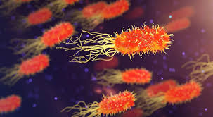
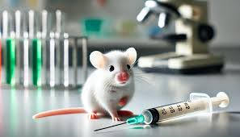

Bacterias por todas partes: cómo entender la diversidad de los microorganismos con los que convivimos
Lucía Almagro presenta Bacterias por todas partes, en el que explica la diversidad, abundancia e importancia que tienen estos microorganismos en los ciclos naturales del planeta y en nuestra propia vida. Azti monitoriza el litoral a través de las estaciones de videometría de Kostasystem.
"Los microorganismos fueron el inicio de la vida en la Tierra, estudiarlos nos acerca a nuestros orígenes" dijo la científica Maria Boutique.
Logran alargar un 25 % la esperanza de vida en ratones viejos con una inyección mensual y sin enfermedades
El bloqueo de una proteina inflamatoria mejora, en ratones, el metabolismo y la función muscular, al tiempo que reduce los signos de envejecimiento y fragilidad.
"Lograr el impedimento de envejecimiento en los ratones nos acerca a descrubrir el misterio de la vida y su eternidad" dijo el científico René Ayala.